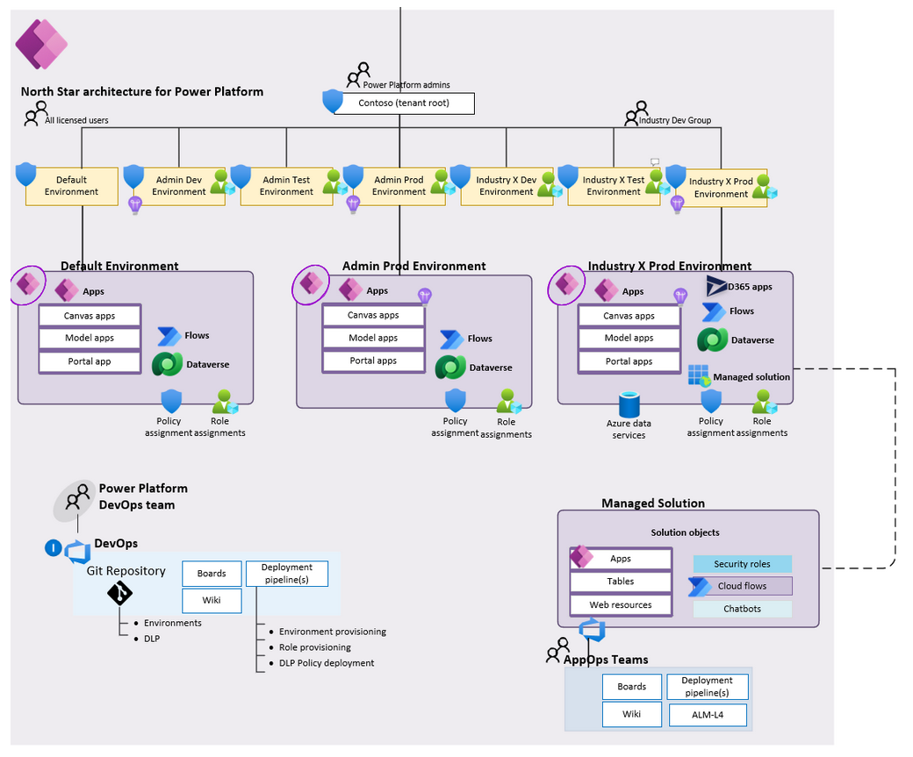
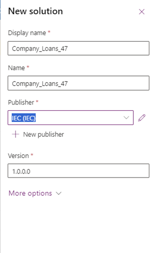
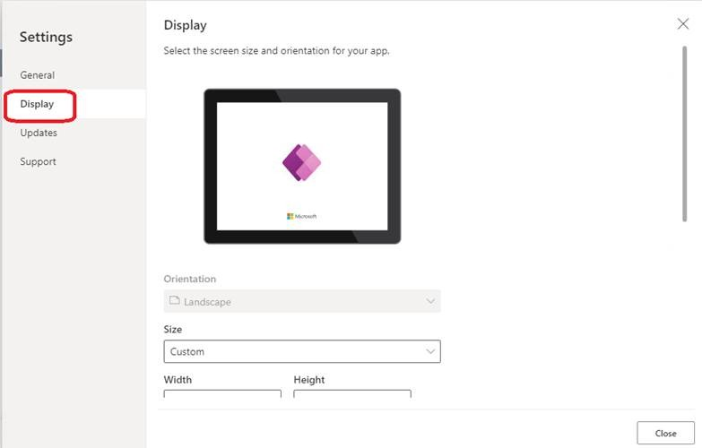
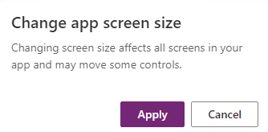
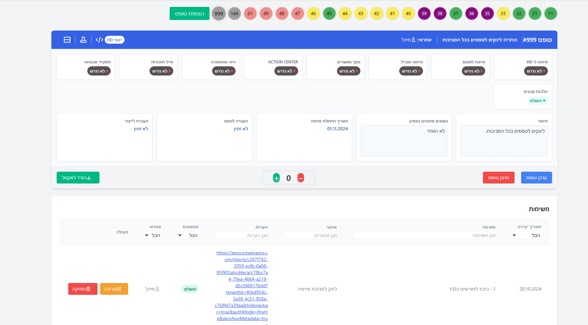
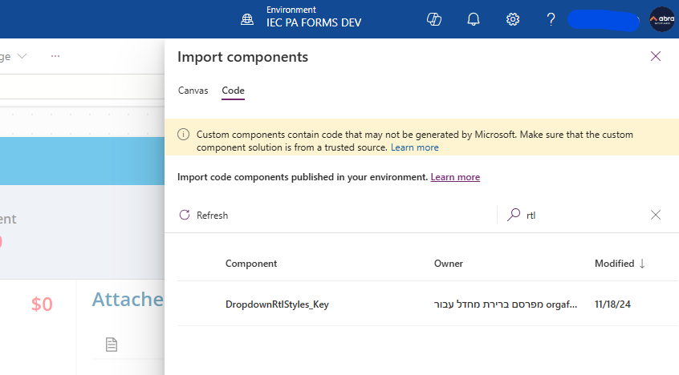
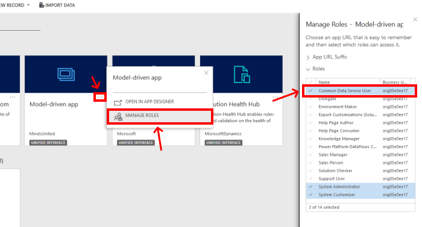
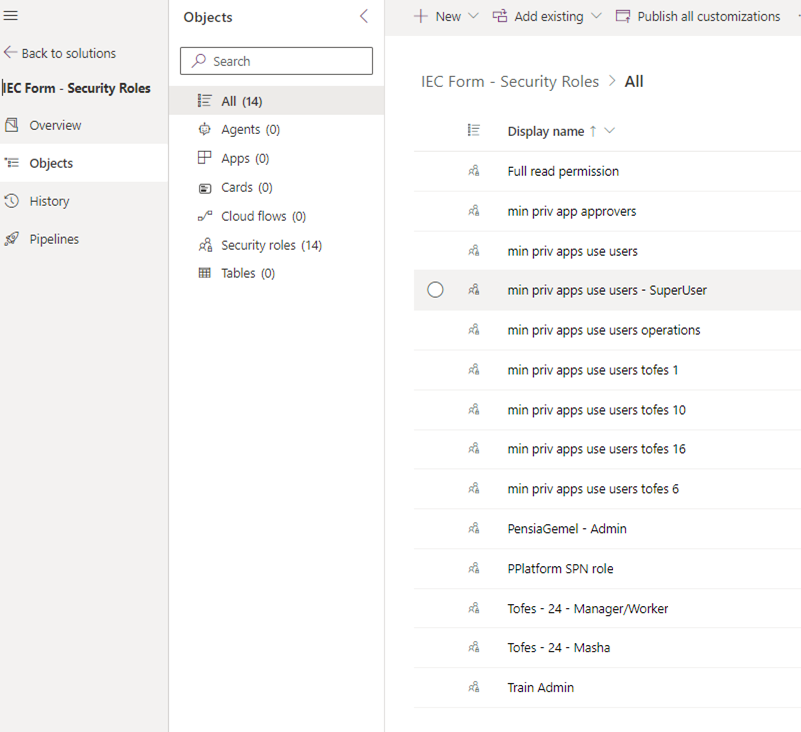
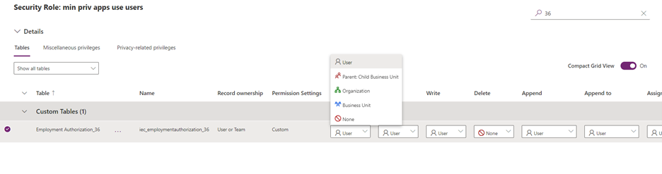
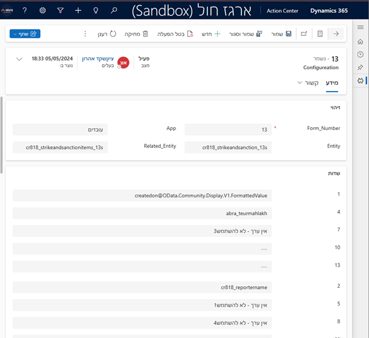

מתודולוגיה חחי - Power Apps ניהול ידע פיתוח
1. כללי
1.1 מבוא
בסיס ידע זה מכיל את כל המידע הדרוש לפיתוח אפליקציות Power Apps בחברת החשמל. מטרתו לשמר ידע, לאפשר אחידות בפיתוח ולסייע למפתחים חדשים להשתלב בעבודה.
1.2 מבנה הפרויקט
1.3 סביבות עבודה
- סביבת פיתוח: לפיתוח ובדיקות ראשוניות
- סביבת QA: לבדיקות מקיפות
- סביבת ייצור: לאפליקציה הסופית
משתמשי מערכת לפי סביבות:
משתמש dev: Pplatform_D-SVC@iec.co.il
*סיסמה*
משתמש test: Pplatform_T-SVC@iec.co.il
*סיסמה*
משתמש prod: Pplatform_P-SVC@iec.co.il
*סיסמה*
1.4 ניהול גרסאות
- השתמשו ב-Git או בכלי ניהול גרסאות דומה
- הגדירו מדיניות ברורה לענפים (branches) ומיזוגים (merges)
2. מתודולוגיית פיתוח
2.1 מוסכמות שמות
2.1.1 כללי
- השתמשו באנגלית לכל השמות
- השתמשו ב-CamelCase לשמות שדות ורכיבים
- הימנעו מקיצורים לא סטנדרטיים
2.1.2 שדות Dataverse
| שם השדה | סוג שדה | הערות |
|---|---|---|
| FirstName | Single Line of Text | מקסימום 100 תווים |
| LastName | Single Line of Text | מקסימום 100 תווים |
| FullName | Single Line of Text | מקסימום 100 תווים |
| BirthDate | Date Only | |
| EmployeeUserID | Single Line of Text | מקסימום 100 תווים (משתמש APIM / SAP = U7T0Q) |
| EmployeeIDCard | Single Line of Text | מקסימום 100 תווים (תעודת זהות = 9999999) |
| Gender | Single Line of Text | מקסימום 100 תווים |
| Single Line of Text | מקסימום 100 תווים | |
| PhoneNumber | Single Line of Text | מקסימום 100 תווים |
| Address | Multiple Lines of Text | |
| City | Single Line of Text | |
| PostalCode | Single Line of Text | מקסימום 10 תווים |
| HireDate | Date Only | |
| JobTitle | Single Line of Text | |
| Department | Single Line of Text | מקסימום 100 תווים |
| ManagerEmail | Single Line of Text | מקסימום 100 תווים |
| ManagerUserID | Single Line of Text | מקסימום 100 תווים |
| ManagerIDCard | Single Line of Text | מקסימום 100 תווים |
2.1.3 רכיבי Power Apps
- כפתורים: btn + [פעולה] (לדוגמה: btnSubmit, btnCancel)
- תיבות טקסט: txt + [תיאור] (לדוגמה: txtFirstName)
- רשימות נגללות: drp + [תיאור] (לדוגמה: drpDepartment)
- טבלאות: tbl + [תיאור] (לדוגמה: tblEmployeesList)
- טפסים: frm + [תיאור] (לדוגמה: frmEmployeeDetails)
| Control name | Abbreviation |
|---|---|
| Badge | bdg |
| Button | btn |
| Camera control | cam |
| Canvas | can |
| Card | crd |
| Charts | chr |
| CheckBox | chk |
| Collection | col |
| Combo box | cmb |
| Component | cmp |
| Container | con |
| Dates | dte |
| Drop down | drp |
| Form | frm |
| Gallery | gal |
| Group | grp |
| Header | hdr |
| Html text | htm |
| Icon | ico |
| Image | img |
| Info Button | info |
| Label | lbl |
| Link | lnk |
| List box | lst |
| Microphone | mic |
| Microsoft Stream | str |
| Page section shape | sec |
| Pen Input | pen |
| Power BI Tile | pbi |
| Progress Bar | pbar |
| Rating | rtg |
| Rich text editor | rte |
| Shapes (rectangle, circle, and so on) | shp |
| Slider | sld |
| Tab List | tbl |
| Table | tbl |
| Text input | txt |
| Timer | tmr |
| Toggle | tgl |
| Video | vid |
2.1.4 Power Apps patch/submit form
ניתן ליצור רשומות חדשות ב-Power Apps באמצעות שתי גישות עיקריות: Patch או
SubmitForm.
שימוש ב-Patch
הפקודה Patch מאפשרת שליטה מלאה על תהליך יצירת הרשומה:
/*
* פונקציית Patch ליצירת רשומת הלוואה חדשה בטבלת CompanyLoan_47S
* הפונקציה מקבלת 3 פרמטרים:
* 1. טבלת היעד (CompanyLoan_47S)
* 2. רשומה ריקה עם ערכי ברירת מחדל
* 3. אובייקט עם כל השדות והערכים לרשומה החדשה
*/
Patch(
CompanyLoan_47S, /* הטבלה שאליה נוספת הרשומה */
Defaults(CompanyLoan_47S), /* יוצר רשומה ריקה עם ערכי ברירת מחדל */
{ /* מגדיר את השדות והערכים לרשומה החדשה */
/* פרטי ההלוואה */
LoanName: glbLoan.LoanName, /* שם ההלוואה */
LoanSum: glbLoan.LoanSum, /* סכום ההלוואה */
PaymentsNum: Value(glbLoan.PaymentsNum), /* מספר תשלומים (ממיר למספר) */
LoanType: glbLoan.LoanType, /* סוג ההלוואה */
LoanRelatedDate: glbLoan.LoanRelatedDate, /* תאריך רלוונטי להלוואה */
LoanComments: glbLoan.LoanComments, /* הערות להלוואה */
LoanStatement: glbLoan.LoanStatement, /* הצהרת הלוואה */
LoanTermsStatement: RTLFIX_Checkbox2_1.Value, /* הצהרת תנאי הלוואה (מתיבת סימון) */
SpecialRequest: glbLoan.SpecialRequest, /* בקשה מיוחדת */
/* פרטי העובד */
Email: User_Info_Table.Y_EMAIL, /* דוא"ל העובד */
Department: User_Info_Table.YHR_MAHLAKA_SHRT, /* מחלקה */
DepartmentCode: Value(User_Info_Table.MACHLAKA), /* קוד מחלקה (ממיר למספר) */
EmployeeSeniority: User_Info_Table.Vetek, /* ותק העובד */
EmployeeStanding: User_Info_Table.MAAMAD_DESC, /* תיאור מעמד העובד */
EmployeeStandingCode: Value(User_Info_Table.MAAMAD), /* קוד מעמד העובד (ממיר למספר) */
FullName: User_Info_Table.NACHN & " " & User_Info_Table.VORNA, /* שם מלא (משפחה + פרטי) */
EmployeeIDCard: User_Info_Table.Id_Number, /* מספר תעודת זהות */
user_sap_id: User_Info_Table.USRID, /* מזהה SAP של העובד */
/* בדיקות נוספות */
hasLowSalaries: glbEmpLoanData.hasLowSalaries, /* האם יש משכורות נמוכות */
isLessThanSixMonthsUntilEndOfEmployment: glbEmpLoanData.isLessThanSixMonthsUntilEndOfEmployment, /* האם נותרו פחות מ-6 חודשים לסיום העסקה */
/* סטטוס ופרטי השולח */
LoanStatus: LookUp(Choices(CompanyLoan_47S.LoanStatus),Value=1).Value, /* קביעת סטטוס התחלתי (ערך 1) */
SenderEmail: CurrentUser.workMail, /* דוא"ל השולח (המשתמש הנוכחי) */
SenderName: CurrentUser.shemMale /* שם השולח (המשתמש הנוכחי) */
}
)# הסבר מפורט על שורת הקוד של LoanStatus
שורת הקוד:
LoanStatus: LookUp(Choices(CompanyLoan_47S.LoanStatus), Value=1).Valueלמה צריך את המבנה המורכב הזה?
הסיבה שצריך להשתמש במבנה LookUp(Choices(...)) היא בגלל שהשדה
LoanStatus הוא מסוג Option Set (קבוצת אפשרויות)
ב-Dataverse.
ב-Dataverse, שדות מסוג Option Set מאוחסנים כערכים מספריים, אך מוצגים למשתמש
כטקסט קריא.
איך זה עובד?
-
Choices(CompanyLoan_47S.LoanStatus)– מחזירה את כל האפשרויות של השדה LoanStatus. כל אפשרות כוללת את המאפייניםValue(מספר) ו-Label(טקסט). -
LookUp(Choices(...), Value=1)– מחפש את האפשרות שבהValueשווה ל-1. -
.Value– מחזיר את הערך שנמצא מתוך הרשומה שנבחרה.
למה לא מספיק לכתוב פשוט Value=1?
לא ניתן לשייך ישירות ערך מספרי לשדה Option Set. חובה לבחור את הערך דרך
Choices() כדי לוודא שהקצאה מתבצעת כראוי. למשל:
LoanStatus: 1תוביל לשגיאה, מכיוון שהמערכת לא יודעת לאיזה ערך מקודד הכוונה.
דוגמה מעשית
נניח שהשדה LoanStatus כולל את האפשרויות הבאות:
| ערך (Value) | תווית (Label) | משמעות |
|---|---|---|
| 1 | בהמתנה לאישור | הבקשה ממתינה לאישור מהגורם המאשר |
| 2 | מאושר | הבקשה אושרה לביצוע |
| 3 | נדחה | הבקשה נדחתה |
Value=1 – כלומר, הסטטוס ההתחלתי של ההלוואה
יהיה "בהמתנה לאישור".
יתרונות המבנה הזה
- גמישות: גם אם הערכים ישתנו בעתיד, כל עוד מתייחסים נכון למבנה, הקוד יישאר תקף.
- תאימות: זו הדרך המומלצת לעבודה עם Option Sets ב-Dataverse.
- אימות: מוודא שהערך שנבחר תקף ונמצא ברשימת האפשרויות.
שימוש ב-SubmitForm
במקרה של שימוש בטופס שנבנה עם Form control, ניתן לשלוח את הנתונים בעזרת הפקודה
SubmitForm. להלן המחשה של השימוש בטופס כזה:
חשוב: בתמונה להלן, הרכיבים המסומנים באדום צריך למחוק, כיוון שהם
מיותרים ועלולים להשפיע על ביצועי האפליקציה. בנוסף, יש לשנות את שמות הרכיבים
לשמות עם קונבנציה מתאימה ושם עם משמעות, למשל: frmLoanRequest במקום
Form_1 ו-btnSubmitLoan במקום Button_1.
איור: טופס Power Apps הכולל שימוש ב-SubmitForm
2.2 ארכיטקטורה
הגישה הארכיטקטונית בפיתוח מערכות Power Apps מבוססת על מספר עקרונות מרכזיים:
- הפרדה בין שכבת הנתונים, הלוגיקה והתצוגה
- שימוש בטבלאות נתונים משותפות לחיבור בין תהליכים
- בניית זרימות עבודה מודולריות ומשותפות
5.1 אבטחה והרשאות
- הגדירו מדיניות אבטחה ברמת השדה למידע רגיש
- תכננו מראש רמות הרשאה שונות למשתמשים שונים
2.3 עיצוב
- להקפיד להגדיר בגובה ורוחב של רכיבים להשתמש בערך דינמי (לדוגמה: Parent.Width /2)
- לבנות רכיבים בתוך Containers רספונסיביים (רוחביים ואופקיים)
- לשמור על עיצוב אחיד בכל האפליקציה
- להשתמש בקומפוננטות מוכנות מראש לשמירה על אחידות
2.4 משתנים באפליקציות
| שם משתנה | סוג | פונקציה | תיאור |
|---|---|---|---|
| UserInGroup | True/False | קריאה לפאוור אוטומייט והחזרת תשובה | בודק אם currentuser הוא חלק מקבוצת Entra ID |
| CurrentUser | Object (Record מ-APIM) | מחזיק תשובה מ-APIM מי המשתמש שמחובר | מחזיק תשובה מ-APIM מי המשתמש שמחובר |
2.5 תיעוד קוד
- כתבו הערות ברורות בקוד
- תיעוד ברור ומפורט ככל הניתן
- במידה ומשתמשים ב-*/ לוודא שסוגרים את ההערה בצורה תקינה עם /* נוסף במקום הנכון
2.6 ביצועים
- הוסיפו אינדקסים לשדות שיחופשו לעתים קרובות
- הסירו אובייקטים שלא בשימוש לשיפור ביצועים
- השתמשו במטאטא בלשונית DATA על מנת לנקות / להסיר בסיסי נתונים שלא בשימוש
- בדקו את מדדי הביצועים ב-appChecker וטפלו בבעיות
3. פיתוח Power Apps
3.1 הקמת פתרון חדש
בהקמת פתרון חדש יש לבחור את IEC כ- Publisher
טבלה חדשה - עמודות בסיס
בכל טבלה חדשה, יש לוודא כי עמודות הבסיס הבאות מוקמות:
| הסבר | הגדרות | סוג נתונים | שם לוגי | שם תצוגה | # |
|---|---|---|---|---|---|
| ריצה אוטומטית של מספרים ללא התערבות חיצונית שלנו | Minimum number of digits: 1 Seed Value: 1 ספירת תווים מרביים: 100 |
מספר אוטומטי # | iec_orderid | OrderId | 1 |
| ריצה אוטומטית של מספרים ללא התערבות חיצונית שלנו | Minimum number of digits: 5 Seed Value: 1 ספירת תווים מרביים: 100 |
מספר אוטומטי # | iec_runnumber | Run Number | 2 |
| אנחנו ממלאים ידנית מה-CurrentUser שדה בשם: MailNickname |
ספירת תווים מרביים: 100 | טקסט | iec_user_sap_id | USER SAP ID | 3 |
הערות:
-
טבלת APPROVER הקיימת אנחנו ממלאים את השדה: OrderGuid בעת יצירת שורות חדשות בטבלת APPROVER
עם ה-GUID של הרשומה מהטבלה הראשית החדשה שלנו.
ככה אנחנו יוצרים קשר בין טבלת APPROVER לטבלה החדשה שלנו, מה שיאפשר לנו לבצע חיפוש מהיר ויעל יותר.
-
כשיוצרים רשומות חדשות בטבלת APPRVOER יש לשים לב למלא את השדות:
- DeepLInk
- FormName
- IDForm
- MailSubject
- OrderGuid -- GUID נלקח מהשורה החדשה שיצרנו בטבלה הראשית של הטופס שלנו.
- OrderID
- RunNumber
- Stage
Stage:
אנחנו מציגים ב-Action Center את כל הרשומות שנוצרו בטבלת Approver שהשדה STAGE = 1.
לכן, יש צורך לוודא שגם במידה ואין צורך בסבב אישורים בטופס שהקמנו יש להקים שורה בטבלת APPROVER שהשדה STAGE = 1, אחרת הלקוח לא יראה את הטופס בטבלאות השונות ב-ACTION CENTER.
3.2 הקמת Canvas App חדש
מה צריך לעשות כאשר פותחים אפליקציה חדשה:
1. שינוי הגדרות תצוגה
יש להגדיר את תצוגת המסך כך שתהיה רספונסיבית לכל סוגי המכשירים.
לאחר לחיצה על SETTINGS יפתח החלון הבא, נלחץ על DISPLAY:
נגלול מעט למטה ונשנה את הערכים הבאים:
- Size - 16:9 Default
- Scale to fit - מסומן (מופעל)
- Lock aspect ratio - מסומן (מופעל)
*לאחר כל שינוי נצטרך לאשר את השינוי בחלון שיקפוץ
2. התאמת המסכים
עבור כל מסך בנפרד יש לבצע את השינויים הבאים:
לדוגמא אם המסך הראשון ברשימה נקרא Screen1 אז נלחץ עליו ובצד ימין בהגדרות / Advanced
נחפש את השורות הבאות ונעדכן אותן:
- Height: App.Height
- Width: App.Width
- MinScreenHeight: 320
- MinScreenWidth: 320
לאחר השינויים יש לשמור את היישום, ללחוץ על פרסום ולרענן את דפדפן.
3. הגדרת ניווט אוטומטי לפי סוג המכשיר
באירוע OnStart של האפליקציה, נוסיף קוד שמזהה את סוג המכשיר ומנווט בהתאם:
If(Host.OSType = "iOS" Or Host.OSType = "Android",
Navigate(Screen_Mobile_Start),
Navigate(Screen_Desktop_Start))
הקוד מזהה את מערכת ההפעלה של המכשיר:
- אם המכשיר הוא iOS או Android - מעביר למסך התחלה למובייל שמותאם לגודל מובייל
- אם המכשיר הוא Windows, Mac OS או Linux - מעביר למסך התחלה לדסקטופ
הערכים האפשריים ל-Host.OSType הם: Windows, Mac OS, iOS, Android, Linux
הערה חשובה: כאשר משתמשים בגישה זו של ניווט ישיר למסך מותאם מובייל, אין צורך להגדיר SizeBreakpoints, מכיוון שכל מסך מתוכנן בנפרד לפי המכשיר המתאים.
4. לשתף עם קבוצת הטסט ועם המשתמש האפליקטיבי של סביבת dev
5. להכניס את הלינק למערכת מעקב אחר תהליכים דיגיטליים לטופס 999
6. איך לייבא ולהשתמש בקומפוננטות
נבחר את ה + ויוצג החלון הבא, נבחר את המסומן באדום (Import component):

לאחר לחיצה על המסומן באדום יוצג החלון הבא:

נפתח את הראשון ברשימה -- IEC Forms Components -- FullScreen
יפתח החלון הבא:

נבחר את הקומפוננטות שנרצה לייבא ע"י לחיצה על העיגול משמאל לשם ולחיצה על Import המסומן בחץ אדום.
7. להתקין את הפתרון של DropdownRtlStyles:
מתחילים באותה צורה כמו ייבוא קומפוננטה מספריית קומפוננטות.
נבחר ב- code ואז נבחר ב- DropdownRrlStyles_Key
קומפוננטה זו הופכת את ה- comboBox וה- dropdown להיות RTL.
ניתן להכריח רכיבים להיות RTL על ידי הוספת התחילית הבאה באפליקציה ל:
RTLFIX_
8. ליצור קונטרול שמכיל את הצבעים, פונטים וגדלים של העיצוב.
מומלץ ליצור קונטרול ייעודי שיכלול את כל הגדרות העיצוב הנדרשות לאפליקציה, כגון:
- צבעים
- גדלי טקסט
- סוגי פונטים
- מרווחים
כך ניתן יהיה לשמור על אחידות בעיצוב ולבצע שינויים בקלות מנקודה מרכזית אחת.
3.3 הקמת אפליקציית MDA חדשה
בעת הקמת אפליקציית MDA חדשה, יש לוודא כי:
- יש להקים תפקיד אבטחה (Security Role) חדש עם השם
{מספר הטופס}_MDA_Access - יש לקשר את תפקיד האבטחה הזה למודל דריבן אפליקציה
- חובה לבצע זאת כדי לאפשר ליוזרים בסביבות QA וייצור גישה לאפליקציה
- מדובר בשיטת אבטחה שמקורה בעולם ה-Dynamics וחשוב לציית לה
שלבים ליצירת תפקיד אבטחה למודל דריבן אפליקציה:
- היכנסו למרכז ניהול הפאואר פלטפורם (Power Platform Admin Center)
- בחרו בסביבה הרלוונטית
- עברו ל-Settings > Users + permissions > Security roles
- לחצו על New כדי ליצור תפקיד אבטחה חדש
- הגדירו את שם התפקיד בפורמט:
{מספר הטופס}_MDA_Access, לדוגמה:47_MDA_Access - אל תגדירו בתוך תפקיד האבטחה הרשאות לטבלאות
- שמרו את התפקיד
שיוך תפקיד האבטחה לאפליקציה:
-

- פתחו את האפליקציה במודל דריבן אפ דיזיינר
- בחרו באפשרות Properties
- בסעיף Manage Roles, הוסיפו את תפקיד האבטחה שיצרתם
- שמרו ופרסמו את האפליקציה
חשוב מאוד: ללא הקמת תפקיד אבטחה ייעודי והגדרתו באפליקציה, המשתמשים בסביבות QA וייצור לא יוכלו לגשת לאפליקציה כלל, גם אם יש להם הרשאות לטבלאות עצמן.
בדיקת תפקידי אבטחה:
ניתן לבדוק אילו תפקידי אבטחה משויכים לאפליקציה בכל עת על ידי:
- כניסה לפתרון (Solution) המכיל את האפליקציה
- בחירה באפליקציית המודל דריבן
- לחיצה על "Edit" או תפריט שלוש הנקודות > Properties
- בדיקת הסעיף Security Roles
שימוש בקבוצות משתמשים:
לניהול יעיל יותר של ההרשאות, מומלץ להשתמש בקבוצות Entra ID ולשייך להן את תפקידי האבטחה, במקום לשייך תפקידי אבטחה לכל משתמש בנפרד. במקרה כזה:
- צרו קבוצת Entra ID ייעודית לאפליקציה
- שייכו את משתמשי האפליקציה לקבוצה זו
- הקצו את תפקיד האבטחה
{מספר הטופס}_MDA_Accessלקבוצה
3.4 סוגי קומפוננטות
Component_HD_FullScreen
יש רק כותרת עם:
- תמונת חברת חשמל ללא כיתוב מטה
- כותרת הניתנת לבחירת ערך ידנית
- כפתור דיווח על בעיה
יש מקטע עם פרטים אישיים עם:
- כותרות מובנות מראש ורק הערך מתחת ניתן לבחירה ידנית
בנוסף יש עוד כותרת ו-2 שדות לבחירה ידנית במידה ורוצים להציג פרטים של חותם מדף קודם / נתונים נוספים.
ניתן להסתרה ע"י השארת הערכים ריקים.
Component_HD_Header&Footer
יש כותרת עם:
- תמונת חברת חשמל ללא כיתוב מטה
- כותרת הניתנת לבחירת ערך ידנית
- כותרת משנה הניתנת לבחירת ערך ידנית
- כפתור דיווח על בעיה
יש שורה תחתונה עם:
- כפתור שליחה אשר ניתן להסתרה באופן ידני
Component_HD_FullScreen_FreeLabels
יש רק כותרת עם:
- תמונת חברת חשמל ללא כיתוב מטה
- כותרת הניתנת לבחירת ערך ידנית
- כפתור דיווח על בעיה
יש 3 מקטעים:
- כותרת ראשית + 8 שדות לבחירה ידנית כולל הכותרות, ניתן להסתיר ע"י השארת הערכים ריקים
- כותרת ראשית + 4 שדות לבחירה ידנית כולל הכותרות, ניתן להסתיר ע"י השארת הערכים ריקים
- כותרת ראשית + 4 שדות לבחירה ידנית כולל הכותרות, ניתן להסתיר ע"י השארת הערכים ריקים
Component_HD_FullScreen_FreeLabels_Header&Footer
יש כותרת עם:
- תמונת חברת חשמל ללא כיתוב מטה
- כותרת הניתנת לבחירת ערך ידנית
- כותרת משנה הניתנת לבחירת ערך ידנית
- כפתור דיווח על בעיה
יש שורה תחתונה עם:
- כפתור שליחה אשר ניתן להסתרה באופן ידני
יש 3 מקטעים:
- כותרת ראשית + 8 שדות לבחירה ידנית כולל הכותרות, ניתן להסתיר ע"י השארת הערכים ריקים
- כותרת ראשית + 4 שדות לבחירה ידנית כולל הכותרות, ניתן להסתיר ע"י השארת הערכים ריקים
- כותרת ראשית + 4 שדות לבחירה ידנית כולל הכותרות, ניתן להסתיר ע"י השארת הערכים ריקים
Component_ReportProblemPopup
חלון דיווח על בעיה,
ערכים שאפשר למלא ידנית:
- Fullname
- phonenumber
בנוסף יש X ו- Y שמאפשרים למקום את החלון באמצע המסך בהתאם לצורך אך לא ניתן לשנות את גודל החלון
שימוש בערכים המתקבלים מקומפוננטות לצורך יצירת בקשה
לאחר לחיצה על "שליחה" בקומפוננטה, מתקבל ממנה הערך componenetName.FooterBTN שהוא בוליאני.
אותו נזין בתוך ה- default של קונטרול Toggle ואת כל הפונקציה שאנו רוצים לבצע עם שליחת הבקשה נשים ב- OnChange של ה- toggle.
אותה לוגיקה נבצע גם בקומפוננטת דיווח על בעיה. הערך המתקבל ממנה הוא
cmp_Responsive_ReportProblemPopup_1.SendPatch_ReportProblemPopup1
ניתן לראות דוגמה לשימושיות בכל האפליקציות.
3.5 תפקידי אבטחה
לכל תהליך יש להגדיר תפקידי אבטחה. מדובר במתן גישה לטבלת הנתונים ולא לאפליקציית POWER APPS.
יש להגדיר את תפקידי האבטחה בפתרון IEC FORM - SECURITY RULES
תפקידי האבטחה שיש לערוך:
- min priv apps use users
- min prov app approvers
יש לחפש את שם הטבלה החדשה ולהיכנס אליה
אנו לרוב נבחר לתת הרשאה ל-user או לא לתת הרשאה בכלל. זה תלוי בצורך הפרטני של כל תהליך.
הסבר קצר:
user: הרשאה לרשומות שהבעלות שלהם היא אותו יוזר
Organization: הרשאה לכל הרשומות בטבלה ללא הגבלה
הערה כללית: פתרון IEC FORMS מכיל זרימות עבודה ישנות מ- KPMG.
4. תהליכי עבודה ואישורים
4.1 טבלת Approver
טבלת הנתונים הראשית של התהליכים הדיגיטליים של חברת החשמל היא טבלת Approvers. היא מכילה את כל שלבי האישור של כל תהליך. גם כאשר אנו יוצרים תהליך ללא אישורים, אנחנו נשמור את התהליך בתוך טבלת approvers כתהליך שהסתיים בהצלחה.
עדכון: כיום אנו משתמשים ויוצרים טבלות Approver מהסוג החדש והמורחב בשם
Approver_{App Number}, הכוללות שדות נוספים רבים לניהול מתקדם של תהליכי
האישור.
הסבר על טבלת Approver הקודמת (לתיעוד היסטורי):
| שם עמודה | הסבר |
|---|---|
| Request For Email | שדה זה מכיל את כתובת האימייל של העובד עבורו הבקשה נוצרת. השדה מאפשר לזהות מי הוא העובד שבשמם מגישים את הבקשה, גם אם השולח בפועל הוא אדם אחר. |
| Request For Name | שדה זה מכיל את שמו המלא של העובד עבורו הוגשה הבקשה. השדה משמש להצגה ברורה ומיידית של זהות בעל הבקשה האמיתי בתהליכים שבהם מגיש הבקשה אינו העובד עצמו. |
| OrderID | מספר OrderID של הרשומה בטבלת הנתונים המקורית של התהליך |
| OrderGuid | המזהה הייחודי של הרשומה בטבלת הנתונים המקורית של התהליך- העמודה עם אותו השם
של הטבלה. ככה אנחנו יוצרים קשר בין טבלת APPROVER לטבלה החדשה שלנו, מה שיאפשר לנו לבצע חיפוש מהיר ויעל יותר. |
| URLDeepLink | קישור לאפליקציית התהליך עם ה-GUID של הרשומה ב- Approvers |
| Active | הרשומה הפעילה בכל תהליך אישור. אם התהליך מאושר, אז כל הרשומות יהיו false |
| ApproveStatus | סטטוס הרשומה הנוכחית. האם המאשר אישר/דחה/ממתין לאישור |
| AppStatus | סטטוס התהליך- התוצאה הסופית או הסטטוס הכללי של כל התהליך. אם יש רשומה אחת
שאושרה ורשומה אחת שמחכה לאישור, ה-AppStatus של שתיהן יהיה ממתין
לאישור. עמודה אוטומטית שאנו לא מכניסים אליה מידע. |
| Stage |
|
הסבר על טבלת Approver החדשה והמורחבת:
הטבלה החדשה בשם Approver_{App Number} מספקת יכולות מתקדמות של ניהול תהליכי
אישור עם שדות מפורטים לכל היבט של התהליך.
| שם עמודה | הסבר |
|---|---|
| iec_ApproverId | מפתח ראשי אוטומטי (GUID). דוגמה: 00000000-0000-0000-0000-000000000000 |
| iec_SourceRowId | GUID של רשומת הבקשה המקושרת. דוגמה: 5a4e23d1-f3a2-40e1-b7a8-157c789e3206 |
| iec_IsFinal | שדה true/false - חיווי שזהו המאשר האחרון בתהליך |
| iec_IDApp | מזהה מספר הפתרון/אפליקציה. דוגמה: 35 |
| iec_ApplicationName | שם האפליקציה לקריאות. דוגמה: HR Onboarding, Expense Approval |
| iec_DeepLink | קישור ישיר לאובייקט/ישות באפליקציה. דוגמה: https://org.crm.dynamics.com/main.aspx?appId=9c7b2ea6-d5f1-48e3-b243-7abef18d51c0&pagetype=entityrecord&etn=iec_request&id=5a4e23d1-f3a2-40e1-b7a8-157c789e3206 |
| iec_ExternalId | מזהה חיצוני למעקב בין שירותים. לדוגמה מספר מזהה של השורה מ-SAP. דוגמה: REQ-2025-05-001-HR |
| iec_ApproverUserId | GUID של המשתמש המאשר. דוגמה: 7bf3ab45-e8c2-4d29-8c16-91e7c9fd03ab |
| iec_ApproverName | שם המאשר לתצוגה. דוגמה: דניאל כהן, Sarah Johnson |
| iec_ApproverEmail | כתובת דוא"ל לשליחת האישור. דוגמה: daniel@company.com - יכול להיות משורשר לכמה מאשרים עם פסיק מפריד |
| iec_ApproverRole | תפקיד המאשר. ערכים: Manager, Director, VP, CFO, HR, Legal, IT |
| iec_SubStageTitle | שם תיאורי של תת-השלב. דוגמה: אישור מנהל ישיר, אישור תקציבי, אישור משאבי אנוש |
| iec_SubStageNumber | סדר האישור בתהליך. דוגמה: 1, 2, 10 |
| iec_ApproveStatus | סטטוס הרשומה הנוכחית. ערכים: 897320000 (אושר), 897320001 (נדחה), 897320002 (ממתין לאישור). ערך ברירת מחדל: ממתין לאישור |
| iec_ApproverDelegateId | GUID של המאשר החלופי. דוגמה: 6ef8cd92-a7f3-4e12-b5d9-0c738f26a51c |
| iec_ApproverDelegateName | שם המאשר החלופי. דוגמה: רונית לוי, John Smith |
| iec_DelegationReason | סיבת ההאצלה |
| iec_ApprovalGroupName | שם קבוצה משוייכת. דוגמה: מחלקת שכר |
| iec_ApprovalGroupId | GUID של קבוצת אישור משותפת. דוגמה: 82a7c539-e4b2-4f67-9c1d-3a5eb28f76e4 |
| iec_StageNumber | מספר השלב בתהליך. דוגמה: 1, 2, 3 |
| iec_StageTitle | שם תיאורי של השלב. דוגמה: אישור מנהל ישיר, אישור תקציבי, אישור משאבי אנוש |
| iec_StatusReason | סטטוס משני. ערכים: OnHold, InReview, Pending_Info, Final_Approval |
| iec_IsMandatory | האם האישור הכרחי. ערכים: Yes, No. ערך ברירת מחדל: Yes |
| iec_Priority | עדיפות וחשיבות האישור. ערכים: Low, Medium, High, Critical. ערך ברירת מחדל: Medium |
| iec_IsRepeatable | האם ניתן לחזור על שלב זה. ערכים: Yes, No. ערך ברירת מחדל: No |
| iec_RequiresMFA | האם דורש אימות רב-גורמי למאשר. ערכים: Yes, No. ערך ברירת מחדל: No |
| iec_CommentBody | הערות מהמאשר. דוגמה: אני מאשר את הבקשה אבל מבקש לקבל עדכון על התקדמות הפרויקט בעוד חודש |
| iec_CommentedOn | זמן הוספת ההערות. דוגמה: 2025-05-21T14:32:15Z |
| iec_IsApprovalRequestSent | האם נשלחה התראה. ערכים: Yes, No. אם תאריך שליחה מלא, אז סמן בכן אחרת לא |
| iec_ApprovalRequestSentTime | זמן התראה אחרונה. דוגמה: 2025-05-20T09:15:00Z |
| iec_AttachmentReferences | אינדיקציה האם המאשר העלה מסמכים. ערכים: Yes, No. ערך ברירת מחדל: No |
| iec_ChannelType | ערוץ התקשורת למשלוח התראות. ערכים: Email, Teams, SMS, WhatsApp. ערך ברירת מחדל: Email |
| iec_ReadReceipt | האם התקבל אישור קריאה. ערכים: Yes, No. ערך ברירת מחדל: No |
| iec_TimeoutDate | תאריך פקיעת תוקף. דוגמה: 2025-05-23T17:00:00Z |
| iec_ReminderCount | מספר התזכורות שנשלחו. דוגמה: 0, 1, 3. ערך ברירת מחדל: 0 |
| iec_MaxReminders | מקסימום תזכורות לשליחה. דוגמה: 2, 3, 5. ערך ברירת מחדל: 3 |
| iec_NextReminderDate | מועד התזכורת הבאה. דוגמה: 2025-05-22T09:00:00Z |
| iec_ReminderInterval | מרווח זמן בשעות בין תזכורות. דוגמה: 8, 24, 48. ערך ברירת מחדל: 24 |
| iec_Device | מזהה המכשיר ממנו בוצע האישור. דוגמה: iPhone13,4-54AF76B1, Windows-PC-765DC24F |
| iec_SenderEmail | כתובת דוא"ל של המשתמש שהגיש את הבקשה או של המשתמש שעבורו הגישו את הבקשה. דוגמה: avi@iec.co.il |
| iec_SenderName | שם מלא של המשתמש שהגיש את הבקשה או של המשתמש שעבורו הגישו את הבקשה. דוגמה: אבי כהן |
| iec_IndexInt | מספר רץ אוטומטי. דוגמה: 1, 2, 3 |
| iec_Index | מספר רץ אוטומטי. דוגמה: 1, 2, 3 |
| iec_AppStatus | סטטוס מאוחד לתהליך - עבור אקשן סנטר. לדוגמה: במידה ושלב 1 אושר אבל 2 נדחה הערך של השדה יהיה "נדחה" |
| iec_ApprovalFlowType | סוג זרימת האישורים בשלב נתון. ערכים: טורי, מקבילי, מאשר ראשון, רוב, כולם
חייבים לדחות טורי - המאשרים מקבלים את הבקשה בזה אחר זה לפי סדר ה-ApproverOrder. כל מאשר מקבל את הבקשה רק לאחר שהקודם לו אישר. מקבילי - כל המאשרים בשלב מקבלים את הבקשה בו-זמנית, וכולם חייבים לאשר כדי שהשלב יושלם. מאשר ראשון - כל המאשרים בשלב מקבלים את הבקשה בו-זמנית, אבל מספיק שאחד מהם יאשר כדי שהשלב יושלם. רוב - השלב מושלם כאשר רוב המאשרים (מעל 50%) אישרו את הבקשה. כולם חייבים לדחות - הבקשה נדחית רק אם כל המאשרים דחו אותה. אם אפילו אחד אישר, הבקשה ממשיכה לשלב הבא. ערך ברירת מחדל: טורי |
4.2 דיאגרמת סבב אישורים
דיאגרמת סבב אישורים - 3 מאשרים
מקרא:
טבלה ראשית (Main Table)
מאשר 1 (Stage = 1)
זהו הסטטוס הראשי שיופיע באקשן סנטר.
יתקבל כ-"אושר" רק אם כל השלבים יאושרו.
אם לפחות שלב אחד נדחה – יהפוך ל-"נדחה".
אחרת, ישאר "ממתין לאישור".
הצגה ב-Action Center למאשר 1
אישור ע״י מאשר 1
מאשר 2 (Stage = 2)
הצגה ב-Action Center למאשר 2
אישור ע״י מאשר 2
מאשר 3 (Stage = 3)
הצגה ב-Action Center למאשר 3
ממתין לאישור מאשר 3
הטופס אושר סופית
הערה חשובה:
כל 3 הרשומות בטבלת APPROVER משתמשות באותו OrderGuid מהטבלה הראשית כדי ליצור קישור. ההבדל העיקרי בין הרשומות הוא ערך ה-Stage המציין את סדר האישורים (1, 2, 3) וכן ה-RunNumber המציין גם הוא את מספר האישור בסבב.
4.3 Action Center
האפליקציה שבה כלל המשתמשים יכולים לראות אילו בקשות הם הגישו ומה הסטטוס שלהם.
אנחנו מציגים ב-Action Center את כל הרשומות שנוצרו בטבלת Approver שהשדה STAGE = 1.
לכן, יש צורך לוודא שגם במידה ואין צורך בסבב אישורים בטופס שהקמנו יש להקים שורה בטבלת APPROVER שהשדה STAGE = 1, אחרת הלקוח לא יראה את הטופס בטבלאות השונות ב-ACTION CENTER.
4.4 טבלת קונפיגורציה
בתוך הפתרון של ה-action canter נחפש את האפליקציה של ה- model driven.
בטבלה זו אנו נכניס את השמות הלוגיים של הטבלה הראשית של התהליך ממנה אנו רוצים להציג נתונים + טבלה משנית שקשורה (לא חובה-רק במידה ויש צורך להציג הרחבה מטבלה שנייה).
Entity- השם של הטבלה הראשית
Related entity- השם של הטבלה המשנית
ונכניס את השדות כפי שמופיע ב-output של get a row by id בפאוור אוטומייט.
בסקשיון "שדות" אנו נכניס את השמות של העמודות מהטבלה הראשית (Entity) כפי שהם מופיעים
ב-power automate.
בסקשיון "שדות מקושרים" אנו נכניס את השמות של העמודות מהטבלה המשנית
(related-entity)
וליצור קשר עם מפתח שמכיר כיצד להתאים את האפליקציה לתהליך החדש.
ה- orderID הוא השדה המקשר בין טבלת Aprovers לטבלה של התהליך.
4.5 זרימות עבודה (Flows)
אנו מחלקים את זרימות העבודה ל-3 זרימות מרכזיות: Build, middle ו- final.
Build
בשמירת בקשה חדשה בטבלת הנתונים של התהליך, תפתח זרימת עבודה אשר תיצור את תהליך האישור בטבלת Approvers ומקים שורות מאשרים בהתאם לצורך. ניתן לראות דוגמה בזרימת העבודה Build_Stage_36.
Middle
זרימת העבודה מחכה לראות האם יש שורה פעילה ב-Approvers, שהשתנו בה ערכים. (Stage=1)
הזרימה תמשיך בשליחת מייל לאדם הרלוונטי ובעדכון רשומות נוספות. ניתן לראות דוגמה בזרימת העבודה Middle_Stage_36
Final
בסיום תהליך האישור, זרימת העבודה תופעל, תיצור קובץ סופי המופק בסיום התהליך ותשלח אותו לעובד. ניתן לראות דומה בזרימת העבודה Final_Stage_36.
בחלק מהתהליכים יש ליצור מסמך סופי שישלח לעובד.
על מנת להעלות את המסמך לתיקיית הטמפלטיים יש:
- להתחבר לסיטריקס
- להתחבר עם המשתמש האפלקטיבי
- להכנס ל-shareppoint site של PA
- להעלות את המסמך לתיקיית: מסמכים- טמפלייט
- להמשיך עם זרימת העבודה. ניתן לראות זרימה לדוגמה ליצירת מסמך מתוך טמפלייט Final_Stage_36.
בסוף כל זרימת עבודה יש להכניס את ה- scope:
Scope Failure Notifications
יש להגדיר את ה- run after ל- has failed.
מטרת הסקופ היא לשלוח מייל וליידע כי זרימת העבודה נכשלה.
יש להכניס את כל הפעולות הקודמות לתוך scope נוסף ולוודא כי קוראים לו flow.
4.6 סיום תהליך
בכל סוף פרוייקט לפני שמעבירים את המערכת לבדיקת QA, יש להכנס לאיפיון ולכתוב הערות מפתח. המטרה היא ליצור תשתית המאפשרת לנו לשמור על אחידות פיתוח ואפשרות לעשות בדיקות QA גם על המידע עצמו ולא רק על העיצוב והפונקציונאליות.
הערות המפתח הכוללות:
1. מבנה המערכת- Power Apps Canvas שמות המסכים והתפקיד שלהם. לדוגמה:
- מסך ראשי: הגשת הבקשה כולל העלאת קבצים ושמירה בטבלת הנתונים.
- מסך מנהל: הצגת בקשת העובד ונימוק המנהל לאישור או החזרה לעובד
- מסך מרכז ליאור: הצגת בקשת העובד ונימוק המנהל ואפשרות להחלטה למרכז ליאור לאשר או להחזיר לעובד.
2. זרימות עבודה- שמות ה- Power Automate ואופן פעולתם. לדוגמה:
- טריגר: יצירת רשומה חדשה בטבלת Approvers עם IDform של התהליך.
- פעולות:
- הבאת הבקשה מהטבלה המקורית.
- בדיקה האם זרימת העבודה נמצאת ב- production
- שליחת מייל למנהל הרלוונטי.
- עדכון עמודת URLDeeplink של הרשומה ב- Approvers.
- שליחת מייל לעובד.
3. DB- טבלאות, עמודות וסוג הנתונים המוזנים לכל טבלה. יש לציין דוגמה של הנתון.
שם הטבלה Employment Authorization_36
| שם עמודה | דוגמה לערך |
|---|---|
| Employment_Authorization_36 | 497b4f4f-f4b5-ef11-b8e9-000d3add945e |
| SenderEmail | LIMOR.LEVIN@IEC.CO.IL |
שם הטבלה Approvers
| שם עמודה | דוגמה לערך |
|---|---|
| URLDeepLink | https://apps.powerapps.com/play/e/c287f742-2959-ecfb-8a08-95f903abcd4e/a/504246ff-5549-442f-a4e8-afe4fedcff5d?tenantId=40ed954c-3e38-4c31-858a-c768fd7a39aa&sourcetime=1733305934654&source=portal&hidenavbar=true&ApproveID=555d74ca-b5c2-ef11-b8e9-002248a253e8 |
| Stage | 1 |
4. תפקידי אבטחה- מהם תפקידי האבטחה שהוגדרו לקבוצות min priv apps use users ולקבוצת min prov app approvers. אם הוגדרו תפקידי אבטחה פרטניים בתוך זרימות העבודה, יש לציין זאת.
5. אבטחה וגישה
5.1 אבטחה והרשאות
- הגדירו מדיניות אבטחה ברמת השדה למידע רגיש
- תכננו מראש רמות הרשאה שונות למשתמשים שונים
- השתמשו בקבוצות AD לניהול הרשאות
5.2 הלבנת מסמכים
אם שומרים קבצים בטבלת annotation אז יש פלוו שרץ ישירות ועושה להם הלבנה. הפלוו הוא OPSWAT בפתרון IEC-OPSWAT
דוגמה לשמירת קבצים בטבלת הערות/annotaion ניתן לראות בפתרון 40 בפלו Associated_Car_Permit_UploadCarLicense
אם שומרים קובץ בטבלה אחרת יש צורך ליצור פלוו המלבין את הקבצים.
Associated_Car_Permit_UploadCarLicense
יש לשמור עותק של הפלו MyStoryAttachments_14S - OPSWAT
ולשייך אותו לפתרון הרלוונטי. יש לשנות את הטריגר שלו שיכיל את הטבלה של הפתרון
ששומר את הקובץ-
גדי יוסיף עוד מידע
5.3 קבוצות AD (Entra ID)
עובדי פנסיה וגמל : 057725c6-10f8-47b2-8b26-ad0aa1204b14
(בAzure DevOps בחחי במאמרי ידע יש רשימה מלאה של כל קבוצות EntraID עם הGUID שלהם)
5.4 ניהול הרשאות ברמת שורה (Row Level Security)
מבנה כללי
לכל מערכת יש מספר טבלאות מרכזיות:
- טבלת המערכת - לדוגמא: הלוואות, היריון, וכו.
- טבלת המאשרים - טבלת האישורים לאותה מערכת
- טבלת מסמכים - מסמכים הקשורים למערכת
אנחנו רוצים לוודא שרק מי שקשור לשורה מסוימת יוכל לראות את השורה. להלן השלבים והכללים:
בעת יצירת שורה בטבלת המערכת
- שיתוף העובד: נשתף את העובד עבורו נוצרה הבקשה בטבלת המערכת בהרשאת קריאה (בהתאם לדרישה העסקית נוסיף גם הרשאת עריכה).
חשוב: צריך לחפש לפי המייל של העובד ולא לפי יוצר השורה, כי לפעמים מרכז ליאור יוצר עבור העובד ולא העובד יוצר עבור עצמו.
- הגדרת בעלים לטבלת המערכת: נגדיר את הבעלים של השורה בטבלת המערכת להיות המאשר הראשון בסבב האישורים.
- הגדרת בעלים לשורת המאשר הראשונה: נגדיר את הבעלים של שורת המאשר הראשונה להיות המשתמש או הקבוצה של המאשר הראשון.
- שיתוף העובד בשורות האישורים: נשתף את העובד עבורו נוצרה הבקשה בהרשאת קריאה לכל שורות האישורים עבור הבקשה שלו.
- שיתוף המסמכים: נשתף את המסמכים עם כל גורמי האישור הרלוונטים.
בכל אישור של מאשר - באוטומציה שמעבירה את הבקשה למאשר הבא
- העברת בעלות המאשר הנוכחי: נעביר את הבעלים של המאשר הנוכחי להיות המשתמש האפליקטיבי או האדמין לפי הדרישות העסקיות.
- הגדרת המאשר הבא כבעלים בטבלת המערכת: נהפוך את המאשר הבא לבעלים של שורת טבלת המערכת.
- הגדרת בעלים לשורת המאשר הבא: נהפוך את הבעלים של שורת המאשר הבא להיות המאשר הבא - משתמש או קבוצה.
בסיום תפקיד שורת Approver
ככל ששורת Approver סיימה את תפקידה (אושר, נדחה, בוטל) הבעלים יעבור להיות המשתמש האפליקטיבי או האדמין הנבחר לפי הדרישות העסקיות.
DefaultAdmin
יישום טכני - שיתוף באוטומציה
שיתוף עם הרשאת צפיה או עריכה
בשביל לשתף באוטומציה עם הרשאת צפיה או עריכה, יש להשתמש ב-unbound action.
שינוי בעלים של השורה
בשביל לשנות את הבעלים, זה נעשה בשורת יצירה או עדכון הרגילה של הטבלה:
אם מחליפים למשתמש:
- יש לחפש את ה-GUID של המשתמש בתוך המשתמשים של הסביבה הנוכחית לפי המייל
- לאחר מכן לשים בנוסחה הבאה:
Systemusers(GUID)
אם מחליפים לקבוצה:
- יש לחפש את ה-GUID של הקבוצה המקומית בסביבה לפי ה-GUID של ה-Entra ID
- לאחר מכן לשים בנוסחה הבאה:
teams(GUID)
דיאגרמת זרימה - דוגמה עם 2 מאשרים
שלב 1: יצירת בקשה
| טבלת המערכת | בעלים: מאשר 1 |
| שורת מאשר 1 | בעלים: מאשר 1 (משתמש/קבוצה) |
| שיתופים | העובד: קריאה לטבלת המערכת ולכל שורות האישורים |
שלב 2: מאשר 1 אישר
| טבלת המערכת | בעלים: מאשר 2 |
| שורת מאשר 1 | בעלים: DefaultAdmin |
| שורת מאשר 2 | בעלים: מאשר 2 (משתמש/קבוצה) |
שלב 3: מאשר 2 אישר - תהליך הסתיים
| טבלת המערכת | בעלים: DefaultAdmin (או משתמש אפליקטיבי) |
| שורת מאשר 1 | בעלים: DefaultAdmin |
| שורת מאשר 2 | בעלים: DefaultAdmin |
שימו לב: דיאגרמה זו ממחישה את התהליך הבסיסי. בפרויקטים מורכבים יותר עם מספר מאשרים, יש לחזור על תהליך העברת הבעלות בכל שלב אישור.